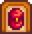
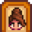
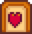
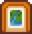
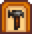
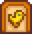
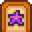
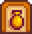
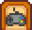
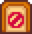

Player Menu

|
Under Construction This article or section is under construction. It may be in the process of an expansion or major restructuring. Last edited by TheReAcE on 2026-02-21 17:17:11. |
The Player Menu (also known as the in-game menu, Escape menu, or Pause menu) can be opened by the player at any time during gameplay using the ESC or E button on PC. The menu is divided into several tabs, each of which offers the player different options and information. More detailed descriptions of each tab are shown below.
The game will automatically pause while the Player Menu is open, except in multiplayer.
Controls
The Player Menu can be opened during gameplay using the following controls:
- The ESC or E button on PC
- The + or B button on Nintendo Switch. ZL and ZR can be used to navigate through the tabs.
- The Start, Menu, or B button on Xbox
- The Options or Circle button on PlayStation
- The Menu icon with the three horizontal lines on mobile devices
Tabs
Inventory
- Main article: Inventory
The 
Skills
- This section describes the graphics on the Skills Tab. For skill mechanics, see Skills.
The 
Total skill levels are used to determine the player's title, displayed below their image on the left-hand side of the screen. This part of the screen also shows how many Golden Walnuts and Qi Gems the player has.
Once the Meet The Wizard quest has been completed, the bottom-left corner of the screen will show which rooms the player has completed at the Community Center. If the player has purchased a Joja Membership, it will instead show the player's Joja Community Development Form progress.
Once the player has achieved Level 10 in all skills, the green Mastery gauge will be unlocked. This gauge will fill as the player earns any type of XP. Each time the gauge is full, the player's Mastery level will increase, and the player will be able to claim a new reward from the Mastery Cave.
Below the Mastery gauge, the bottom of the screen also displays the following icons, from left to right:
- The player's Farmhouse upgrade level.
- The deepest floor achieved in the Mines. If the player has unlocked Skull Cavern, it will display the deepest floor achieved in Skull Cavern instead.
- The number of Stardrops the player has found.
Prior to the Feast of the Winter Star, the player's secret gift recipient is shown in the bottom-right corner.
Social
- Main article: Friendship
The 
Map
- For a list of in-game locations, including those that can be viewed on the map, see Category:Locations.
The 
Crafting
- Main article: Crafting
The 
Animals
- Main article: Animals
The 
Special Items & Powers
- Main article: Special Items & Powers
The 
Collections
- Main article: Collections
The 
Options
- Main article: Options
The 
Exit Game
The 
History
- 1.6: Added Animals and Special Items & Powers tabs. Added more information to the Skills tab. Redrew the world map on the Map tab to better match the in-game locations, added seasonal map variants, and added a map for Ginger Island.